Carbohydrates are the most abundant biomolecules on earth. Each year, photosynthesis by plants and algae converts more than 100 billion metric tons of CO2 and H2O into cellulose and other plant products. Certain carbohydrates (sugar and starch) are a staple of the human diet in most parts of the world, and the oxidation of carbohydrates is the central energy-yielding pathway in most nonphotosynthetic cells. Insoluble carbohydrate polymers serve as structural and protective elements in the cell walls of bacteria and plants and in the connective tissues and cell coats of animals. Other carbohydrate polymers lubricate skeletal joints and provide adhesion between cells. Complex carbohydrate polymers, covalently attached to proteins or lipids, act as signals that determine the intracellular location or the metabolic fate of these glycoconjugates. This chapter introduces the major classes of carbohydrates and glycoconjugates, and provides a few examples of their many structural and functional roles.
Carbohydrates are polyhydroxy aldehydes or ketones, or substances that yield such compounds on hydrolysis. Most substances of this class have empirical formulas suggesting that they are carbon "hydrates," in which the ratio of C : H : O is 1: 2 : 1. For example, the empirical formula of glucose is C6H12O6, which can also be written (CH2O)6 or C6(H2O)6. Althoughmany common carbohydrates conform to the empirical formula (CH2O)n, others do not; some carbohydrates also contain nitrogen, phosphorus, or sulfur.
There are three major size classes of carbohydrates: monosaccharides, oligosaccharides, and polysaccharides (the word "saccharide" is derived from the Greek sakkharon, meaning "sugar"). Monosaccharides, or simple sugars, consist of a single polyhydroxy aldehyde or ketone unit. The most abundant monosaccharide in nature is the sixcarbon sugar D-glucose.
Oligosaccharides consist of short chains of monosaccharide units joined together by characteristic glycosidic linkages. The most abundant are the disaccharides, with two monosaccharide units. Typical is sucrose, or cane sugar, which consists of the six-carbon sugars D-glucose and D-fructose joined covalently. All common monosaccharides and disaccharides have names ending with the suffix "-ose." Most oligosaccharides having three or more units do not occur as free entities but are joined to nonsugar molecules (lipids or proteins) in hybrid structures (glycoconjugates).
Polysaccharides consist of long chains having hundreds or thousands of monosaccharide units. Some polysaccharides, such as cellulose, occur in linear chains, whereas others, such as glycogen, have branched chains. The most abundant polysaccharides, starch and cellulose made by plants, consist of recurring units of D-glucose, but they differ in the type of glycosidic linkage.
The simplest of the carbohydrates are the monosaccharides, the subunits from which disaccharides, oligosaccharides, and polysaccharides are constructed. Monosaccharides are either aldehydes or ketones, with one or more hydroxyl groups; the six-carbon monosaccharides glucose and fructose have five hydroxyl groups. The carbon atoms to which hydroxyl groups are attached are often chiral centers, and stereoisomerism is common among monosaccharides.
We begin by describing the families of monosaccharides with backbones of three to seven carbons----their structure and stereoisomeric forms, and the means of representing their three-dimensional structures on paper. We then discuss several special chemical reactions of the carbonyl groups of monosaccharides. One such reaction, the addition of a hydroxyl group from the same molecule, produces cyclic forms of five- and six-carbon sugars and creates a new chiral center, adding further stereochemical complexity to this class of compounds. The nomenclature for unambiguously specifying the configuration about each carbon atom in a cyclic form and the means of representing these structures on paper are therefore described in some detail; these will be useful later in our discussion of the metabolism of monosaccharides.
We will encounter a variety of derivatives of the simple monosaccharides in later chapters, and some of the most common of these are introduced here.
| Monosaccharides are colorless,
crystalline solids that are freely soluble in water but
insoluble in nonpolar solvents. Most have a sweet taste.
The backbone of monosaccharides is an unbranched carbon
chain in which all the carbon atoms are linked by single
bonds. One of the carbon atoms is double-bonded to an
oxygen atom to form a carbonyl group; each of the other
carbon atoms has a hydroxyl group. If the carbonyl group
is at an end of the carbon chain, the monosaccharide is
an aldehyde and is called an aldose; if the carbonyl
group is at any other position, the monosaccharide is a
ketone and is called a ketose. The simplest
monosaccharides are the two three-carbon trioses:
glyceraldehyde, an aldose, and dihydroxyacetone, a
ketose. Monosaccharides with four, five, six, and seven carbon atoms in their backbones are called, respectively, tetroses, pentoses, hexoses, and heptoses. There are aldoses and ketoses of each of these chain lengths: aldotetroses and ketotetroses, aldopentoses and ketopentoses, and so on. The hexoses, which include the aldohexose D-glucose and the ketohexose D-fructose (Fig. 11-1), are the most common monosaccharides in nature. The aldopentoses D-ribose and 2-deoxy-D-ribose (Fig. 11-1) are components of nucleotides and nucleic acids (Chapter 12). |
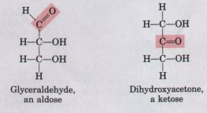 ).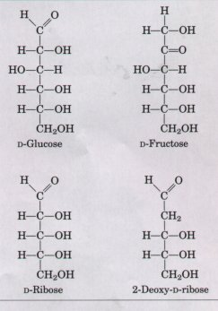 Figure 11-1 Two common hexoses, and the pentose components of nucleic acids. D-Ribose is a component of ribonucleic acid (RNA), and 2-deoxy-D-Ribose is a component of deoxyribonucleic acid (DNA). |
All the monosaccharides except dihydroxyacetone contain one or more asymmetric (chiral) carbon atoms and thus occur in optically active isomeric forms (Chapter 3). The simplest aldose, glyceraldehyde, contains a chiral center (the middle carbon atom) and therefore has two different optical isomers, or enantiomers (Fig. 11-2; see also Fig. 3-9). By convention, one of these two forms is designated the D isomer of glyceraldehyde; the other is the L isomer. To represent three-dimensional sugar structures on paper, we often use Fischer projection formulas (Fig. 11-2).
In general, a molecule with n chiral centers can have 2n stereoisomers. Glyceraldehyde has 21 = 2; the aldohexoses, with four chiral centers, have 24 = 16 stereoisomers. The stereoisomers of monosaccharides of each carbon chain length can be divided into two groups, which differ in the configuration about the chiral center most distant from the carbonyl carbon; those with the same configuration at this reference carbon as that of D-glyceraldehyde are designated D isomers, and those with the configuration of L-glyceraldehyde are L. isomers. When the hydroxyl group on the reference carbon is on the right in the projection formula, the sugar is the D isomer; when on the left, the L isomer. Of the 16 possible aldohexoses, 8 are D forms and 8 are L. Most of the hexoses found in living organisms are D isomers.
Figure 11-3a shows the structures of all the stereoisomers of aldotrioses, aldotetroses, aldopentoses, and aldohexoses of the D series; Figure 11-3b shows the D-ketoses. The carbon atoms of a sugar are numbered beginning at the end of the chain nearest the carbonyl group. Each of the eight D-aldohexoses, which differ in the stereochemistry at C-2, C-3, and C-4 (Fig. 11-3a), has its own name: D-glucose, D-galactose, D-mannose, etc. Ketoses are commonly designated by inserting ul into the name of the corresponding aldose; for example, D-ibulose is the ketopentose corresponding to the aldopentose D-ribose. However, a few ketoses are named otherwise, such as fructose (from Latin fructus, meaning "fruit"; fruits are a good source of this sugar).
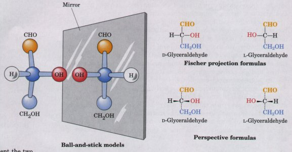
Figure 11-2 Three ways to represent the two stereoisomers of glyceraldehyde, which are mirror images of each other. Ball-and-stick models show the actual configuration of molecules. The conventions for projection and perspective formulas were explained in Fig. 5-3.
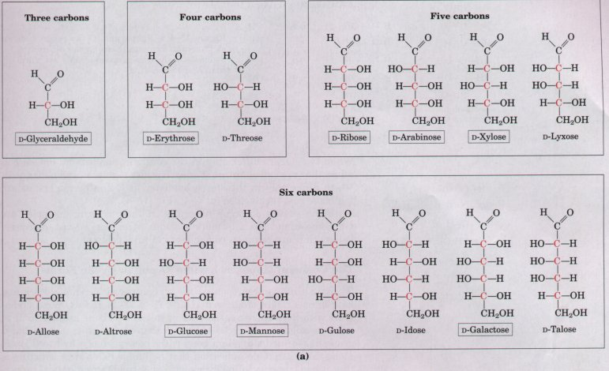
| Figure 11-3 The family of (a) D-aldoses and (b) D-ketoses having from three to six carbon atoms, shown as projection formulas. The carbon atoms in red are chiral centers. In all of these D isomers, the chiral carbon most distant from the carbonyl carbon has the same configuration as he chiral carbon in D-glyceraldehyde. The sugars named in boxes are the most abundant in nature; we shall encounter these again in this and later chapters. | 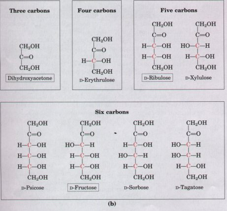 |
| When two sugars differ only in the
configuration around one carbon atom, they are called
epimers of each other; D-glucose and D-mannose, which
differ only in the stereochemistry at C-2, are epimers,
as are D-glucose and D-galactose (at C-4) (Fig. 11-4). Some sugars do occur naturally in their L form; examples are L-arabinose and the L isomers of some sugar derivatives (discussed below) that are common components of glycoproteins. |
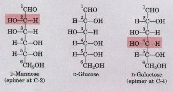 Figure 11-4 D-Glucose and its two epimers, shown as projection formulas. Each epimer differs from D-glucose in the configuration at only one chiral center (shaded red). |
| We have thus far represented the
structures of various aldoses and ketoses as
straight-chain forms (Figs. 11-3, 11-4). In fact,
monosaccharides with five or more carbon atoms in the
backbone usually occur in aqueous solution as cyclic
(ring) structures, in which the carbonyl group has formed
a covalent bond with the oxygen of a hydroxyl group along
the chain. One indication that D-glucose has a ring
structure is that it has two crystalline forms with
slightly different optical properties. When D-lucose is
crystallized from water, a form called α-Dglucose
results, which differs in its optical activity (the
degree to which it rotates plane-polarized light) from
the form of D-glucose crystallized from the solvent
pyridine, a form known as β-D-glucose. The two forms are
identical in chemical composition. Chemical evidence
indicates that the α and β isomers of D-glucose are not
linear structures but two different six-membered ring
compounds (Fig. 11-5). Such cyclic forms of sugars are
called pyranoses because they resemble the sixmembered
ring compound pyran (see Fig. 11-7). The systematic names
for the two ring forms of D-glucose are α-D-glucopyranose
and (β-Dglucopyranose. The α and β forms of D-glucose interconvert in aqueous solution, by a process called mutarotation. Thus a solution of α-Dglucose and a solution of β-D-glucose eventually form identical equilibrium mixtures having identical optical properties. This mixture consists of about onethird α-D-glucose, two-thirds β-D-glucose, and very small amounts of the linear form. |
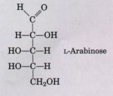 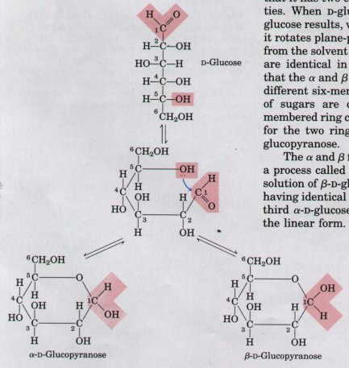 Figure 11-5 Formation of the two cyclic forms of D-glucopyranose. When the aldehyde group at C-1 and the hydroxyl group at C-5 react to form the hemiacetal linkage, two different stereoisomers (anomers), designated α and β, may be formed at C-1. |
| The formation of pyranose rings in
D-glucose is the result of a general reaction between
aldehydes and alcohols to form derivatives called
hemiacetals (Fig. 11-6), which contain an additional
asymmetric carbon atom and thus can exist in two
stereoisomeric forms. D-Glucopyranose is an
intramolecular hemiacetal, in which the free hydroxyl
group at C-5 has reacted with the aldehydic C-1,
rendering the latter asymmetric and producing the α and
β stereoisomers of D-glucose (Fig. 11-5). Isomeric forms
of monosaccharides that differ from each other only in
their configuration about the hemiacetal carbon atom,
such as α-D-glucopyranose and (β-D-glucopyranose (or
about the hemiketal carbon, as described below) are
called anomers. The hemiacetal or carbonyl carbon atom is
called the anomeric carbon. Only aldoses having five or
more carbon atoms can form pyranose rings. Aldohexoses
also exist in cyclic forms having five-membered rings,
which, because they resemble the five-membered ring
compound furan, are called furanoses. However, the
six-membered aldopyranose ring is much more stable than
the aldofuranose ring and predominates in aldohexose
solutions. Ketohexoses also occur in α and β anomeric forms. In these compounds the hydroxyl group on C-5 (or C-6) reacts with the keto group at C-2, forming a furanose (or pyranose) ring containing a hemiketal linkage (Fig. 11-6). D-Fructose forms two anomers (Fig. 11-7); the more common form is β-D-fructofuranose. |
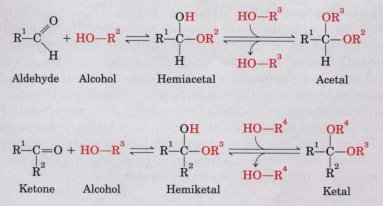 Figure 11-6 An aldehyde or ketone can react with an alcohol in a 1:1 ratio to yield a hemiacetal or hemiketal, respectively, creating a new chiral center at the carbonyl carbon. Addition of a second alcohol molecule produces an acetal or ketal. 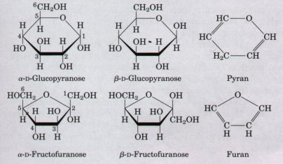 Figure 11-7 Haworth perspective formulas of the pyranose forms of D-glucose and the furanose forms of D-fructose. The edges of the ring nearest the reader are represented by bold lines. Note that hydroxyl groups below the plane of the ring in Haworth perspectives are at the right side of a Fischer projection (compare with Fig. 11-5). Pyran and furan are shown for comparison. |
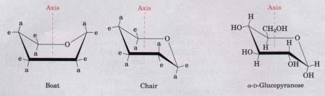
Figure 11-8 (a) Conformational formulas of the boat and chair forms of the pyranose ring. Substituents on the ring carbons may be either axial (a), projecting almost parallel with the vertical axis through the ring, or equatorial (e), projecting roughly perpendicular to this axis. Generally, substituents in the equatorial positions are less sterically hindered by neighboring substituents, and conformations with their bulky substituents in equatorial positions are favored. The boat conformation is uncommon except in derivatives with very bulky substituents. (b) The conformational formula of α-D-glucopyranose, which has the chair conformation.
Haworth perspective formulas (Fig. 11-7) are commonly used to show the ring forms of monosaccharides. The six-membered pyranose ring is not actually planar, as Haworth perspectives suggest, but tends to assume either the "boat" or the "chair" conformation (Fig. 11-8). Recall from Chapter 3 that two conformations of a molecule are interconvertible without the breakage of any bonds, but two configurations can be interconverted only by breaking a covalent bond-in the case of α and β configurations, the bond involving the pyranose oxygen atom. We shall see that the specific three-dimensional conformations of the monosaccharide units are important in determining the biological properties and functions of some polysaccharides.
In addition to simple hexoses such as glucose, galactose, and mannose, there are a number of derivatives in which a hydroxyl group in the parent compound is replaced with another substituent, or a carbon atom is oxidized to a carboxylic acid (Fig. 11-9). We have already encountered some of these derivatives as components of glycolipids (see Figs. 9-9, 9-11) and glycoproteins (see Fig. 10-8). In glucosamine, galactosamine, and mannosamine, the hydroxyl at C-2 of the parent compound is replaced with an amino group. The amino group may be condensed with acetic acid, as in N-acetylglucosamine (Fig. 11-9). This glucosamine derivative is part of many structural polymers, including those of the bacterial cell wall. Bacterial cell walls also contain another derivative of glucosamine in which the three-carbon carboxylic acid lactic acid is ether-linked to the oxygen at C-3 of N-acetylglucosamine to form N-acetylmuramic acid (Fig. 11-9). The substitution of a hydrogen for the hydroxyl group at C-6 of galactose or mannose produces fucose or rhamnose, respectively (Fig. 11-9); these deoxy sugars are found in the complex oligosaccharide components of glycoproteins and glycolipids described later.
When the carbonyl (aldehyde) carbon of glucose is oxidized to a carboxylic acid, gluconic acid is produced; other aldoses yield other aldonic acids. Oxidation of the carbon at the other end of the carbon chain (C-6 of glucose, galactose, or mannose) forms the corresponding uronic acid; glucuronic, galacturonic, or mannuronic acids. Both aldonic and uronic acids form stable intramolecular esters, called lactones (Fig. 11-9). In addition to these hexose derivatives, one ninecarbon acidic sugar deserves mention. N-acetylneuraminic acid (sialic acid), a nine-carbon derivative of N-acetylmannosamine, is a component of many glycoproteins and glycolipids in higher animals. The car boxylic acid groups of these sugar derivatives are ionized at pH 7, and the compounds are therefore correctly named as carboxylatesglucuronate, galacturonate, etc.
In the synthesis and metabolism of carbohydrates, the intermediates are very often not the sugars themselves, but their phosphorylated derivatives. Condensation of phosphoric acid with one of the hydroxyl groups of a sugar forms a phosphate ester, as in glucose-6-phosphate (Fig. 11-9). Sugar phosphates are relatively stable at neutral pH, and bear a negative charge. One effect of sugar phosphorylation within cells is to prevent the diffusion of the sugar out of the cell; highly charged molecules do not, in general, cross biological membranes without specific transport systems (Chapter 10). Phosphorylation also activates sugars for subsequent chemical transformation. Several important phosphorylated derivatives of sugars will be discussed in the next chapter.
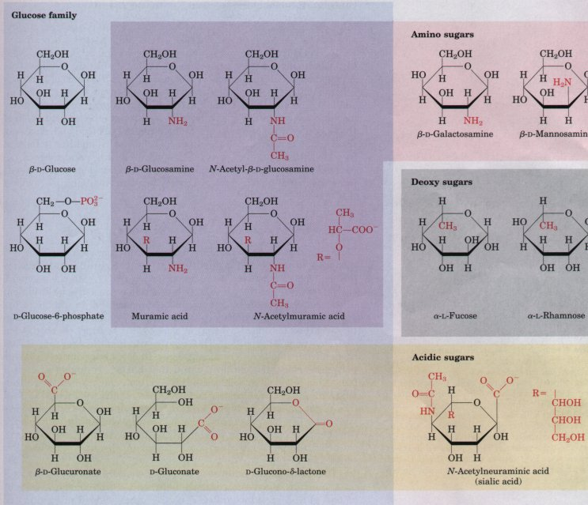
Figure 11-9 Some hexose derivatives important in biology. In amino sugars, an -NH2 group replaces one of the -OH groups in the parent hexose. Substitution of -H for -OH produces a deoxy sugar. Note that the deoxy sugars shown here occur as the L isomers. The acidic sugars contain a carboxylate group, which confers a negative charge at neutral pH. D-Glucono-δ-lactone results from formation of an ester linkage between the C-1 carboxylate anc the C-5 (also known as the δcarbon) hydroxyl group of gluconae.
Monosaccharides can be oxidized by
relatively mild oxidizing agents such as ferric (Fe3+) or
cupric (Cu2+) ion (Fig. 11-10). The carbonyl carbon is
oxidized to a carboxylic acid. Glucose and other sugars
capable of reducing ferric or cupric ion are called
reducing sugars. This property is useful in the analysis
of sugars; it is the basis of Fehling's reaction (Fig.
11-l0a), a qualitative test for the presence of reducing
sugar. By measuring the amount of oxidizing agent that is
reduced by a solution of a sugar, it is also possible to
estimate the concentration of that sugar. For many years,
the glucose content of blood and urine was determined in
this way in the diagnosis of diabetes mellitus, a disease
in which the blood glucose level is abnormally high and
there is excessive urinary excretion of glucose. Now,
more sensitive methods for measuring blood glucose employ
an enzyme, glucose oxidase (Fig. 11-l0b).Disaccharides Contain a Glycosidic BondDisaccharides such as maltose, lactose, and sucrose consist of two monosaccharidesjoined covalently by an O-glycosidic bond, which is formed when a hydroxyl group on one sugar reacts with the anomeric carbon on the other (Fig. 11-11). This reaction represents the formation of an acetal from a hemiacetal (glucopyranose) and an alcohol (a hydroxyl group of a second sugar molecule) (see Fig. 11-6). When an anomeric carbon becomes involved in a glycosidic bond, it cannot be oxidized by cupric or ferric ion. The sugar containing the anomeric carbon atom no longer acts as a reducing sugar. In describing disaccharides or polysaccharides, the end of a chain that has a free anomeric carbon (i.e., is not involved in a glycosidic bond) is commonly called the reducing end of the chain. Glycosidic bonds are readily hydrolyzed by acid (but resist cleavage by base). Thus disaccharides can be hydrolyzed to yield their free monosaccharide components by boiling with dilute acid. Another type of glycosidic bond joins the anomeric carbon of a sugar to a nitrogen atom; N-glycosyl bonds, found in all nucleotides, are described in Chapter 12. |
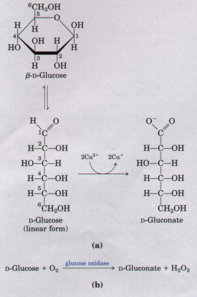 Figure 11-10 (a) Oxidation of the anomeric carbon of glucose and other sugars is the basis for Fehling's reaction; cuprous ion (Cu+) produced in this reaction forms a red cuprous oxide precipitate. In the hemiacetal (ring) form, C-1 of glucose cannot be oxidized by Cu2+ . However, the open chain form is in equilibrium with the ring form, and eventually the oxidation reaction goes to completion. (b) Blood glucose concentration is commonly determined by measuring the amount of H2O2 produced in the reaction catalyzed by glucose oxidase. The H2O2 reacts with certain dyes to produce an easily detected color change. |
| The disaccharide maltose (Fig. 11-11)
contains two D-glucose residues joined by a glycosidic
linkage between C-1 (the anomeric carbon) of one glucose
residue and C-4 of the other. The configuration of the
anomeric carbon atom in the glycosidic linkage between
the two D-glucose residues is α. Although the anomeric
carbon atom involved in the glycosidic bond is not
available for reaction with cupric or ferric ion, maltose
is nonetheless a reducing sugar; the free anomeric carbon
(of the second glucose residue) can be oxidized (Fig.
11-11). The two glucose units in maltose are therefore
not identical chemically. The second glucose residue is
capable of existing in α- and β-pyranose forms; the β
form is shown in Figure 11-11. To name disaccharides such as maltose unambiguously, and especially to name more complex oligosaccharides, several rules are followed. First, the compound is written with its nonreducing end to the left. An O precedes the name of the first (left) monosaccharide unit, as a reminder that the sugar-sugar linkage is through an oxygen atom. The configuration at the anomeric carbon joining the first (left) monosaccharide unit to the second is then given (α or β). To distinguish fiveand six-membered ring structures, "furanosyl" or "pyranosyl" is inserted into the name of each monosaccharide residue. The two carbon atoms joined by the glycosidic bond are then indicated in parentheses, with an arrow connecting the two numbers; for example, (1→4) shows that C-1 of the first sugar residue is joined to C-4 of the second. If there is a third residue, the second glycosidic bond is described next, by the same conventions. To shorten the description of a complex polysaccharide, three-letter abbreviations for each monosaccharide (Table 11-1) are often used. Following this convention for naming oligosaccharides, maltose is therefore named O-α-D-glucopyranosyl-(1→4)-β-D-glucopyranose. Because most sugars encountered in this book are the n enantiomers, and the pyranose form of hexoses predominates, we will generally use a shortened version of the formal name of such compounds, giving the configuration of the anomeric carbon and naming the carbons joined by the glycosidic bond. In this abbreviated nomenclature, maltose is Glc(α1→4)Glc. |
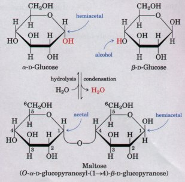 Figure 11-11 A disaccharide is formed from two monosaccharides (here, two molecules of D-glucose) when an alcoholic -OH of one glucose molecule (right) condenses with the intramolecular hemiacetal of the other glucose molecule (left), with the elimination of H2O and formation of a glycosidic bond. The reversal of this reaction is hydrolysisattack by H20 on the glycosidic bond. The maltose molecule retains a reducing hemiacetal at the C-1 not involved in the glycosidic bond. |
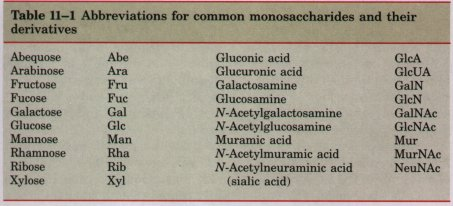
| The disaccharide lactose (Fig. 11-12), which yields D-galactose and D-glucose on hydrolysis, occurs only in milk. The anomeric carbon of the glucose residue is available for oxidation, and thus lactose is a reducing disaccharide. Its abbreviated name is Gal(β1→4)Glc. Sucrose (table sugar) is a disaccharide of glucose and fructose. It is formed by plants but not by higher animals. In contrast to maltose and lactose, sucrose contains no free anomeric carbon atom; the anomeric carbons of both monosaccharide units are involved in the glycosidic bond (Fig. 11-12). Sucrose is therefore not a reducing sugar, and has no reducing end. Its abbreviated name is given correctly as either Glc(α1→2)Fru or Fru(β2→1)Glc. Sucrose is a major intermediate product of photosynthesis; in many plants it is the principal form in which sugar is transported from the leaves to other portions of plants via their vascular systems. Trehalose (Glc(α1→α1 )Glc; Fig. 11-12) is a disaccharide of nglucose and, like sucrose, is a nonreducing sugar; the anomeric carbons of both glucose moieties are involved in the glycosidic bond. Trehalose is a major constituent of the circulating fluid (hemolymph) of insects, in which it serves as an energy storage compound. | 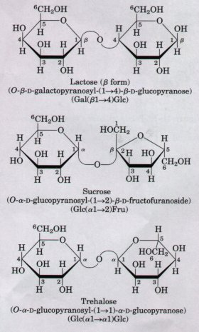 Figure 11-12 Common disaccharides, shown as Haworth perspectives. The full systematic names and abbreviations are in parentheses. |